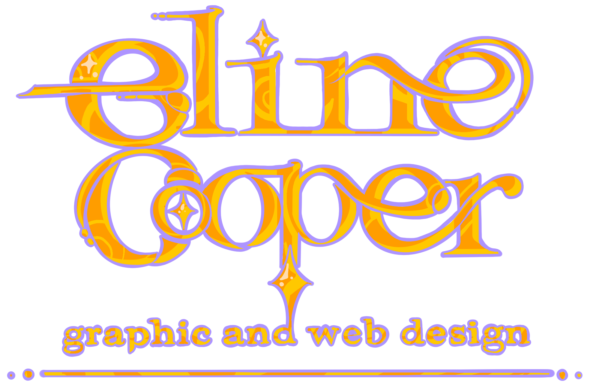

Essay
When going into coding the website I was definitely over confident, I sketched up many different wireframe designs,
none of them I was actually able to implement in code. I ended up having to go set by step and design elements as I
went as it made the task easier. The most issues I ran into were trying to make my website responsive to
different-sized screens and viewports as flexbox was not something I had even heard of before this module.
Working with github for me is definitely a bitter medicine. On one hand, it is industry standard and has features
that are very useful for working on group projects like protected branches. But on the other hand I find it very
tedious to have to constantly push my code when auto saving it to onedrive has worked well over years of coding
projects. Admittedly, I've forgotten to push my github work quite a few times.
For the actual content of the webpage I found really fun to create. I have a bit of a background with graphics
having taken a level and an internship so the poster design was pretty fun for me as I got to re-use software like
photoshop and adobe illustrator which I am quite familiar with but have not had any reason to use since my exams
ended. If I were to improve my work I could have pushed my designs further, maybe experimenting with different
photographs of skateboarders or included some custom illustrations or typefaces I had made. I am pretty satisfied
with all of the designs I made for the poster project but especially my finial poster I think I struck the right
tone, it needed to come across as a reputable establishment, a place where parents would be comfortable ending their
kids to, but also appeal to the alternative culture often associated with skateboarding. I think it would have been
more interesting if some of my other ideas went more for the alternative grunge style, I've experimented with that
style for a band poster I made and it was a surprisingly fun experience, I really enjoyed how far I
could push the designs with very dense textures and angular typefaces and still make it hit the brief.
However I found the typography project design surprisingly time consuming for me to complete work I was satisfied
with. I went through several different designs for each of them. I found pushing my designs to be something more
novel and unique was difficult because of the amount of limitations that I had on the design. The limitation that I
found most difficult to work with was having a lot of text to fit into each design; this resulted in most of my
designs having pretty illegible text for almost all of my designs apart from my modular and grid typographic
systems. I focused more on having the designs be more focused on properly representing each of the typographic
styles rather than make it a good poster for the "The Arnolfini International Centre for Contemporary Arts". I do
not regret my decision to do this as I think having to make more complex designs would have been too time consuming
even for me to deal with.
About me

Hello! I'm Eline Cooper, a digital media student with a background in Graphics, Computer
Science A-levels. In my spare time I draw landscape sketches and digital art.
You can contact me here
email: Eline2.Cooper@live.uwe.ac.uk